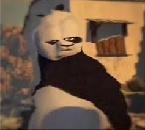

This is one of my favourite recipes. Its FILLED with protein, atleast 200kg of protein and fats. THE GAINS WILL GO HARD WITH THIS. uhh.... ignore that, the recipe is epic, pandas are chill. don't eat them. i totally haven't tried that. trust me üëç
